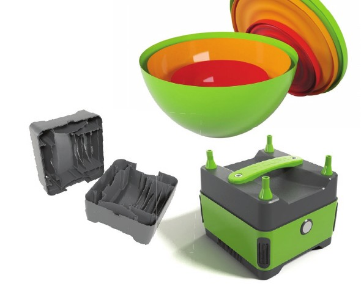
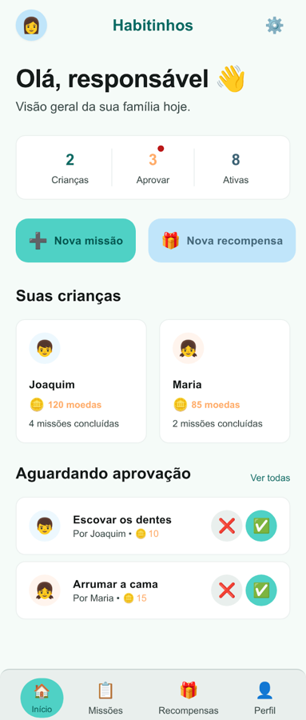
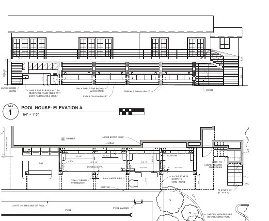
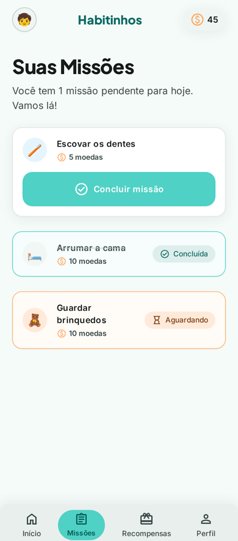

Habitinhos
Produto próprio para famílias, com app mobile, backend, carteira de moedas e documentação de produto.
Abrir repositórioDesenvolvedor backend Java
Trabalho com Java no Mercado Livre. Antes do código, passei anos criando produtos físicos — do desenho à produção. Foi lá que aprendi a perguntar “para quem?” e “para quê?” antes de construir. Hoje uso isso para entregar sistemas que funcionam no mundo real, não só na apresentação.


01
Sobre
Sou desenvolvedor backend Java no Mercado Livre, formado em Design de Produto pela UFRJ e em Sistemas de Computação pela UFF. Minha carreira passou por produtos físicos, modelagem 3D, prototipagem, ensino e engenharia de software.
Foi lendo The Product-Minded Engineer, de Drew Hoskins, que encontrei um nome para o que já praticava: ser um engenheiro com mentalidade de produto. Bom software não nasce só de decisões técnicas — nasce de entender quem usa, o contexto e o impacto de cada escolha, inclusive a de cortar o que não ajuda.
02
Antes do código
Por anos, tirei produtos do papel: do desenho à produção, venda, instalação e manutenção. Isso mudou a forma como escrevo software — interface, regras e arquitetura precisam funcionar juntas para o produto sobreviver fora da apresentação.

Projeto principal
O app onde tudo isso se encontra.
Um produto para famílias organizarem a rotina das crianças com missões, moedas, aprovações e recompensas. Os combinados precisam ser claros para os pais e leves para as crianças — e os dados de cada família ficam separados e protegidos, sob controle dos responsáveis.

03
Seleção
Produto próprio para famílias, com app mobile, backend, carteira de moedas e documentação de produto.
Abrir repositórioSite institucional em WordPress, com tema próprio e plugin para organizar agenda e conteúdo das pastorais.
Ver projetoQuer conhecer minha trajetória completa? Vamos conversar
04
Contato
Estou aberto a oportunidades de backend e a projetos em que a qualidade técnica dependa de entender produto, operação e pessoas.